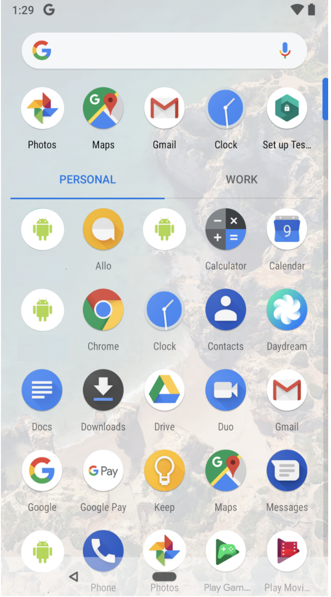
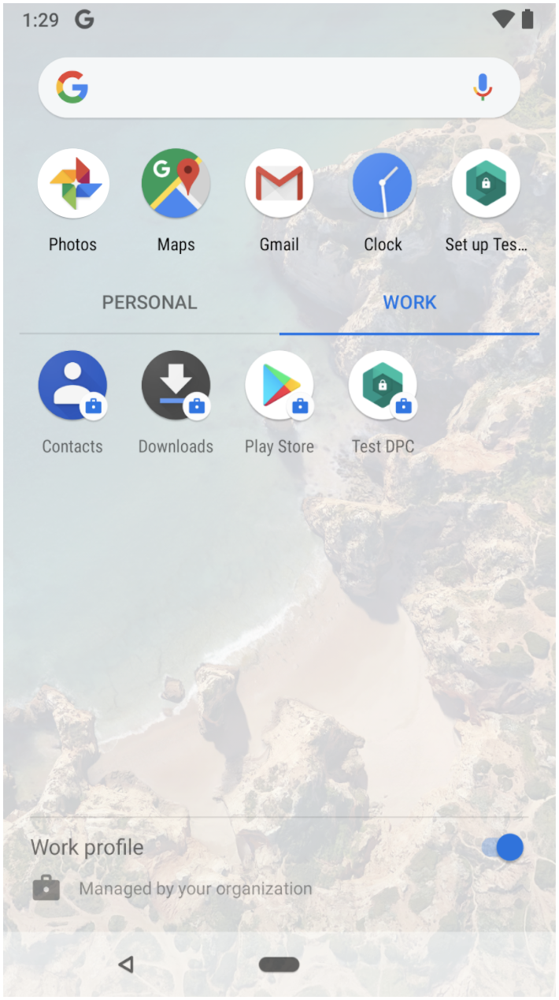
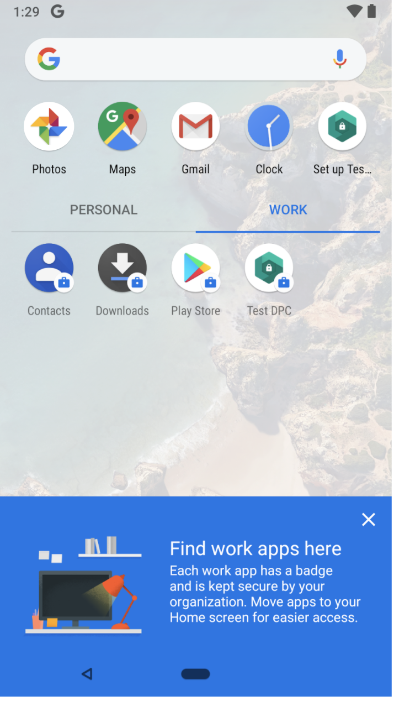
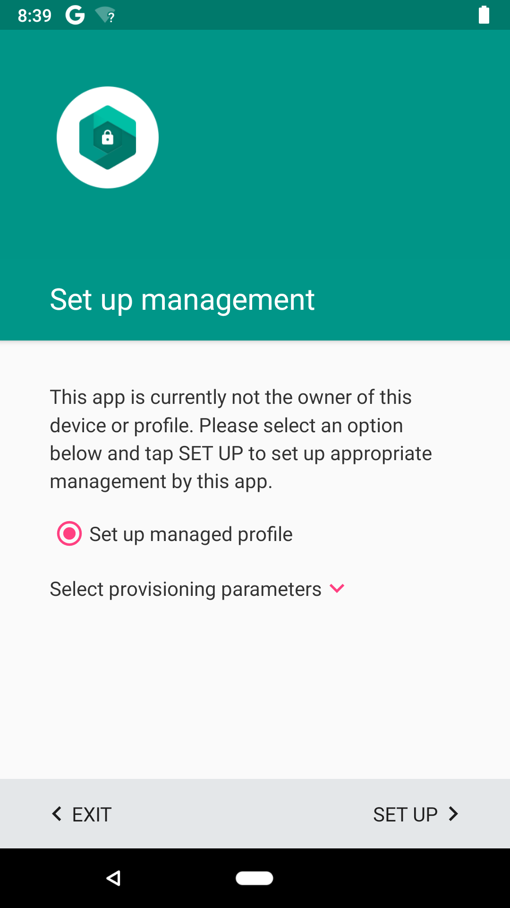
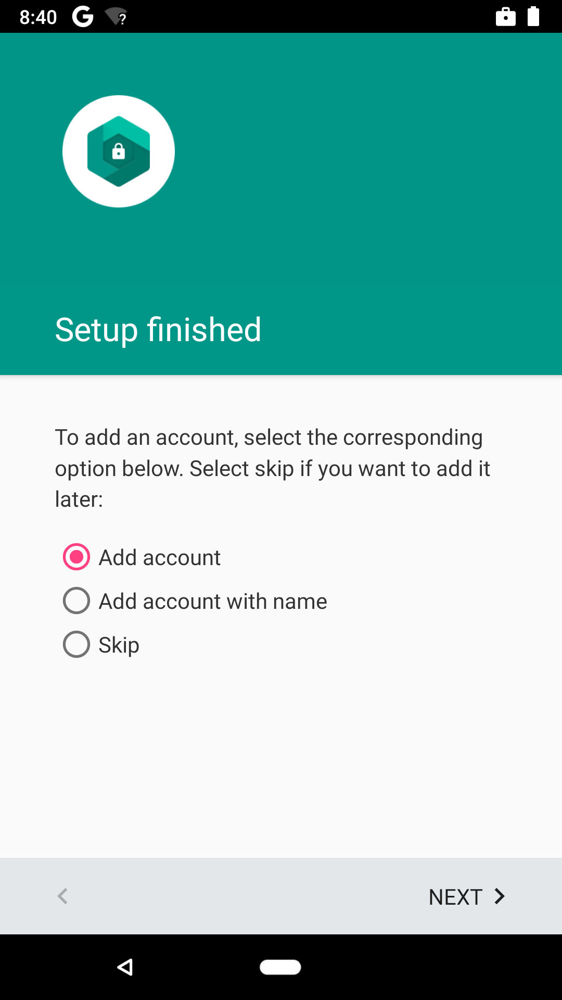
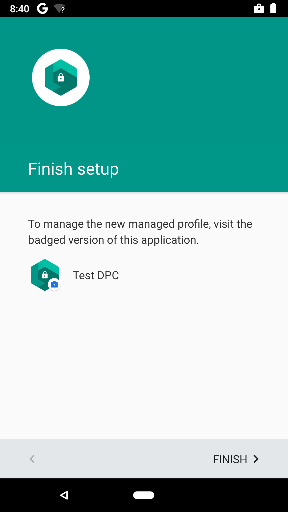
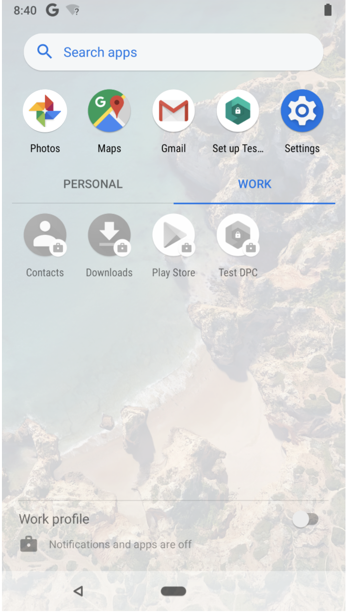

A managed profile or work profile is an Android user with additional special properties around management and visual aesthetic.
The primary goal of a managed profile is to create a segregated and secure space for managed data (such as corporate data) to reside. The administrator of the profile has full control over scope, ingress, and egress of data as well as its lifetime. These policies offer great powers and therefore fall upon the managed profile instead of the device administrator.
- Creation. Managed profiles can be created by any application in the primary user. The user is notified of managed profile behaviors and policy enforcement before creation.
- Management. Management is performed by applications that programmatically invoke APIs in the DevicePolicyManager class to restrict use. Such applications are referred to as profile owners and are defined at initial profile setup. Policies unique to managed profile involve app restrictions, updatability, and intent behaviors.
- Visual treatment. Applications, notifications, and widgets from the managed profile are always badged and typically made available inline with user interface (UI) elements from the primary user.
Data segregation
Managed profiles use the following data segregation rules.
Applications
Applications are scoped with their own segregated data when the same app exists in the primary user and managed profile. Generally, applications act independently of one another and cannot communicate directly with one another across the profile-user boundary.
Accounts
Accounts in the managed profile are distinctly unique from the primary user. There is no way to access credentials across the profile-user boundary. Only apps in their respective context are able to access their respective accounts.
Intents
The administrator controls whether intents are resolved in/out of managed profile or not. Applications from the managed profile are default scoped to stay within the managed profile exception of the Device Policy API.
Settings
Enforcement of settings is generally scoped to the managed profile, with exceptions for lockscreen and encryption settings that are still scoped to the device and shared between the primary user and managed profile. Otherwise, a profile owner does not have any device administrator privileges outside the managed profile.
Managed profiles are implemented as a new kind of secondary user, such that:
uid = 100000 * userid + appid
They have separate app data like regular users:
/data/user/<userid>
The UserId is calculated for all system requests using
Binder.getCallingUid(), and all system state and responses are
separated by userId. You may consider instead using
Binder.getCallingUserHandle rather than getCallingUid
to avoid confusion between uid and userId.
The AccountManagerService maintains a separate list of accounts for each user. The main differences between a managed profile and a regular secondary user are as follows:
- The managed profile is associated with its parent user and started alongside the primary user at boot time.
- Notifications for managed profiles are enabled by ActivityManagerService allowing the managed profile to share the activity stack with the primary user.
- Other shared system services include IME, A11Y services, Wi-Fi, and NFC.
- New Launcher APIs allow launchers to display badged apps and whitelisted widgets from the managed profile alongside apps in the primary profile without switching users.
Device administration
Android device administration includes the following types of device administrators for enterprises:
- Profile owner. Designed for bring your own device (BYOD) environments
- Device Owner. Designed for corp-liable environments
The majority of the new device administrator APIs added for Android 5.0 are available only to profile or device owners. Traditional device administrators remain but are applicable to the simpler consumer-only case (e.g., find my device).
Profile owners
A Device Policy Client (DPC) app typically functions as the profile owner. The DPC app is typically provided by an enterprise mobility management (EMM) partner, such as Google Apps Device Policy.
The profile owner app creates a managed profile on the device by sending the
ACTION_PROVISION_MANAGED_PROFILE intent. This profile is
distinguished by the appearance of badged instances of
apps, as well as personal instances. That badge, or Android device
administration icon, identifies which apps are work apps.
The EMM has control only over the managed profile (not personal space) with some exceptions, such as enforcing the lock screen.
Device owners
The device owner can be set only in an unprovisioned device:
- Can be provisioned only at initial device setup
- Enforced disclosure always displayed in quick-settings
Device owners can conduct some tasks profile owners cannot, such as:
- Wipe device data
- Disable Wi-Fi/Bluetooth
- Control
setGlobalSetting setLockTaskPackages(the ability to whitelist packages that can pin themselves to the foreground)- Set
DISALLOW_MOUNT_PHYSICAL_MEDIA(FALSEby default). WhenTRUE, physical media, both portable and adoptable, cannot be mounted.
DevicePolicyManager APIs
Android 5.0 and higher offers a greatly improved DevicePolicyManager with dozens of new APIs to support both corporate-owned and bring your own device (BYOD) administration use cases. Examples include app restrictions, silent installation of certificates, and cross-profile sharing intent access control. Use the sample Device Policy Client (DPC) app BasicManagedProfile.apk as a starting point. For details, refer to Building a Work Policy Controller.
Managed profile user experience
Android 9 creates a tighter integration between managed profiles and the platform, making it easier for users to keep their work and personal information separate on their devices. These managed profile user experience changes appear in the Launcher. Implementing the UX managed profile changes creates a consistent user experience across managed devices.
UX changes for devices with an app tray
The managed profile UX changes for Launcher 3 in Android 9 help users maintain separate personal and managed profiles. The apps drawer provides a tabbed view to distinguish between personal profile apps. When users first view the managed profile tab, they are presented with an educational view to help them navigate the managed profile. Users can also turn the managed profile on and off by using a toggle in the Launcher's work tab.
Tabbed profile views
In Android 9, the managed profile lets users
switch between personal and managed app lists in the apps drawer. When
the managed profile is enabled, the app views are separated into two
distinct
RecyclerViews, managed by a
ViewPager. Users can switch between
the different profiles' views by using profile tabs at the top of the
app drawer. The PersonalWorkSlidingTabStrip class
provides a reference implementation of the tabbed profile indicator.
The tabbed view is implemented as part of the Launcher3 class
AllAppsContainerView.
|  |  |
| Figure 1. Personal tab view | Figure 2. Work tab view with the managed profile toggle at the bottom of the screen |
Educational view
Launcher3 also has the option of presenting an educational view at the bottom of the screen when users first open the work tab, as seen in Figure 3. Use the educational view to inform users of the purpose of the work tab and how to make work apps easier to access.
The educational view is defined in Android 9
and higher by the class
BottomUserEducationView with the layout controlled by
work_tab_tottom_user_education_view.xml. Within
BottomUserEducationView, the
KEY_SHOWED_BOTTOM_USER_EDUCATION boolean is set to
false by default. When the user dismisses the educational
view, the boolean is set to true.

Figure 3. Educational view in work tab
Toggle to enable/disable managed profiles
Within the work tab, managed device administrators can present a toggle
in the footer view for users to enable or disable the managed profile as
seen in Figure 2 above. The source for the toggle can be
found in WorkFooterContainer, starting in Android
9. Enabling and disabling the managed profile
is done asynchronously and applied to all valid user profiles. This
process is controlled by theWorkModeSwitch class in Android
9.
UX changes for devices without an app tray
For launchers without an app tray, it is recommended to continue placing shortcuts to the managed profile apps in the work folder.
If the work folder fails to populate correctly, and newly installed apps
are not added to the folder, apply the following change in the
onAllAppsLoaded method in the
ManagedProfileHeuristic class:
for (LauncherActivityInfo app : apps) {
// Queue all items which should go in the work folder.
if (app.getFirstInstallTime() < Long.MAX_VALUE) {
InstallShortcutReceiver.queueActivityInfo(app, context);
}
}
Validating UX changes
Test the managed profile UX implementation using the TestDPC app.
- Install the TestDPC app from the Google Play Store.
- Open the launcher or app drawer and select the Set up TestDPC icon.
- Follow the on-screen instructions to set up a managed profile.
- Open the launcher or app drawer and verify that there is a work tab there.
- Verify that there is a managed profile footer under the work tab.
- Verify that you can toggle the managed profile switch on and off. The managed profile should be enabled and disabled accordingly.
|  |  |  |
| Figure 4. Setting up a managed profile in Set up TestDPC | Figure 5. Add accounts in Set up TestDPC | Figure 6. Set up complete |

|
 |
| Figure 7. App drawer with a work tab. The managed profile footer switch is ON, and the managed profile is enabled. | Figure 8. App drawer with a work tab. The managed profile footer switch is OFF, and the managed profile is disabled. |
Managed profile app badge
For accessibility reasons, the color of the work badge changes from orange to blue (#1A73E8) in Android 9.